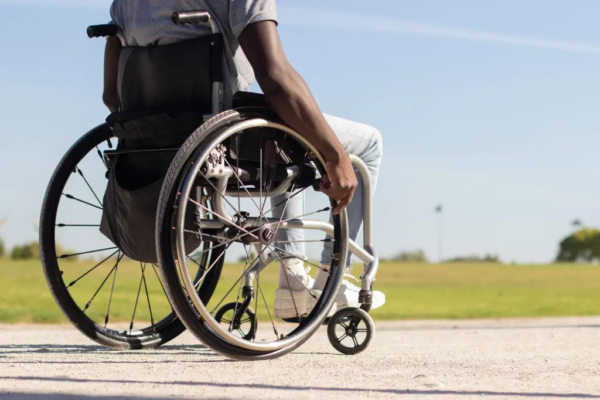

Diversity And Inclusion: This Ability
written By: Yabiteigha Sheila
5 min read. June 15 2023
Photo Credit: Freepik
Growing up as a young child, I would sit with my mum and listen to songs ranging from gospel, country, reggae, RnB and they were mostly oldies. One of such songs I fell in love with was “signed, sealed, delivered, I’m yours” by Stevie Wonder, and my young mind was shocked when my mum told me that Stevie Wonder is actually blind. I was awed by this man that despite his physical impairment, he was able to make his mark in society as a music icon. We also have the likes of the celebrated Nigerian singer and music producer, Cobhams Asuquo and many others who are making waves in their various fields, not letting their disability get in the way. Even with the wins of some, people living with disabilities still encounter numerous challenges that borders on how different they are and the stigmatization they face.
God, in His infinite wisdom thought it wise to create humans and because
He has a great sense of humor, He added diversity. That is why we have
people from different race, tribe, skin color, gender, body built, religious
beliefs and even with special needs. Due to this diversity, we have experienced
segregation and this has led to people clamoring for inclusion, but one aspect
we tend to overlook has to be that of people living with special needs.
According to the World Health Organization’s data, one billion people of the world’s
population have one disability or another, while in Nigeria as at the year 2020,
it was reported that over 27 million Nigerians were living with some form of
disability. In Nigeria, the most common forms include, sight, hearing, physical
impairment, intellectual impairment and communication impairment.
Photo Credit: Freepik
Walking through the streets of major cities, towns and marketplaces, you would
see physically challenged people begging for alms to alleviate their economic
hardships and this is as a result of the barriers they face in terms of social
and economic inclusion.
The inclusion of people living with disabilities into society transcends beyond
compassion which sometimes is just a display of pity, but it moves towards social
justice which is actively considering and providing easy access to them in society.
The needs of physically challenged people should be the forefront of conversations
as a society, and more efforts should be made by governmental and non-governmental
organizations.
According to the United Nations Convention on the Rights of a Child in 1989 positioned
education as a human issue, this means that all children have a right to quality education
regardless of ethnicity, religious beliefs, gender, disability etc. This has not been fully
achieved, as children living with disabilities have poor access to quality education and
learning materials. Most schools and teachers, especially in Nigeria, cannot cater to the
needs of physically challenged children and this has resulted in most low-income parents
to forfeit the education of those special needs children.
Most people living with special needs tend to be completely dependent on family for
financial support and care, which happens because they lack appropriate educational
knowledge and skills. A parent of a child with either ADHD or autism would find it
difficult to place their child in a school that would accommodate their child’s
needs, because not all schools have such facilities and trained teachers and the
ones that might have them would be expensive, thereby making it difficult for
low-income parents to enroll their children and wards to such schools.
The Federal and State Governments should create more special needs schools and
be involved in the training of special needs teachers. Concerted efforts should
be made for the training and retraining of teachers, mostly in public schools
to identify and accommodate children with special needs and learning difficulties
that are in their classes. Also, provision of hearing aids, Braille educational
materials and ease of movement should be of the essence.
After we have dealt with the issue of schools, we also have to consider churches
and mosques. A few churches render the services of a sign language interpreter
to attend to the needs of people with hearing impairments. People living with
disabilities find it difficult to participate fully in religious activities.
It should be the responsibility of churches, mosques, and other religious
centers to engage the faith of their members by breaking down those barriers
and promoting understanding and acceptance. Physical accessibility like ramps
and restrooms should be considered when building churches and mosques. Sign
language interpreters from those gatherings can volunteer their services.
Braille bibles and other religious materials should be made available in
Church bookshops for members to acquire.
When constructing roads and public buildings like schools, banks, hospitals,
offices, restrooms and shopping malls etc., people living with disabilities
should be considered, so they can access these facilities with little or no
assistance. Such facilities should be equipped with ramps, elevators, automated
doors, Braille buttons for elevators, sound and visual aids.
If as a society, we have been able to attend to the issues raised above, but we
do not address our behavioral bias towards people living with disability, then
we have not fully achieved our goal of inclusion. Awareness should be raised in
how to treat people living with disabilities, the implementation of the Discrimination
against People with Disabilities (Prohibition) Act 2018 in Nigeria should be forefront
in our road to inclusion.
As we move towards a more inclusive society, let’s remember that everybody has a special
talent, regardless of disability and let’s celebrate our diversity just as Neil Milliken,
Head of Accessibility and Digital Inclusion at Atos puts it, “we should celebrate
neurodiversity, the world would be poorer and life duller if we are all the same.”
You may also like:

Self-Awareness: Why Do You Need It?
A newborn cub loses its mother at childbirth and is adopted by a mother sheep. The lion grows up believing that it was a sheep. It bleated and ate grass like a sheep. But, it was never truly happy. It always felt there was something missing. Plus, the other sheep...

Religion: The Accidental Enemy
Where I come from, the worst enemy is religion. Religion is simply a set of principles that guides our way of life. Merriam-Webster dictionary defines it as “an organized system of beliefs, ceremonies, and rules used to worship a god or a group of gods”. This singular institution has influenced and shaped not...
Gratitude For Diversity
Diversity and Inclusion has become a major topic for discussion in our world. Every issue links to diversity and inclusion in one way or another. At least 60 percent of internet posts talk about diversity and the need for inclusion. Surprisingly, it has evolved into an incredible sales pitch for…
Subscribe To Our Blog via Email
Enter your email address to subscribe to our blog and receive notifications of new posts by email.
John Doe
Oct 9 2023
Sed ut perspiciatis unde omnis iste natus error sit voluptatem accusantium doloremque laudantium, totam rem aperiam, eaque ipsa quae ab illo inventore veritatis et quasi.
John Doe
Oct 9 2023
Sed ut perspiciatis unde omnis iste natus error sit voluptatem accusantium doloremque laudantium, totam rem aperiam, eaque ipsa quae ab illo inventore veritatis et quasi.